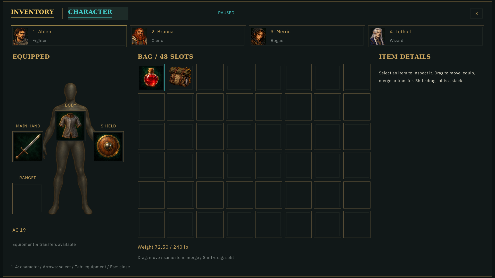
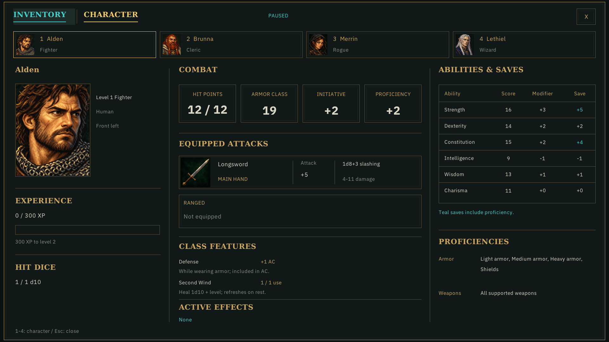

Hidden application-owned captures, 2026-11-01. Teal label/underline and a subtle fill indicate the held tab; gold retains the current selection. Activation waits for release; leaving cancels.

Character held; Inventory remains selected until release.

Inventory held; Character remains selected. Releasing outside cancels.